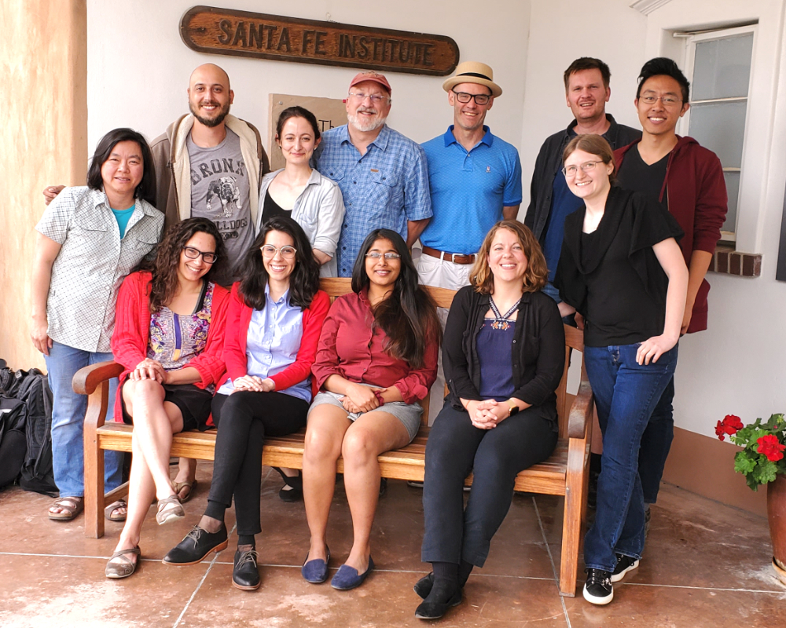

25th Annual Workshop
2019 Graduate Workshop in Computational Social Science Modeling and Complexity
Santa Fe Institute
, 16 June to 28 June, 2019

Graduate Workshop, 2019
Advanced Graduate Workshop, 2019
Program Announcement
Students
Faculty
Reading List
Schedule
Homework Problem
Student Projects
GWS Wiki
Return to
Computational Economics
page.
John H. Miller
, miller@santafe.edu.
 Advanced Graduate Workshop, 2019
Advanced Graduate Workshop, 2019